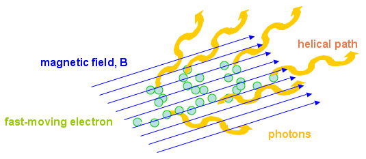
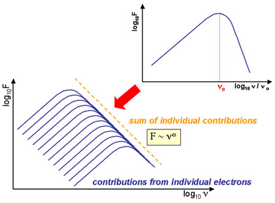

Synchrotron emission is a type of non-thermal radiation generated by charged particles (usually electrons) spiralling around magnetic field lines at close to the speed of light. Since the electrons are always changing direction, they are in effect accelerating and emitting photons with frequencies determined by the speed of the electron at that instant.
The radiation emitted is confined to a narrow cone pointing in the direction of the motion of the particle, in a process called beaming. It is also polarised in the plane perpendicular to the magnetic field, with the degree and orientation of the polarisation providing information about the magnetic field of the source.

The spectrum of synchrotron emission results from summing the emission spectra of individual electrons. As the electron spirals around the magnetic field, it emits radiation over a range of frequencies peaking at ν0, the critical frequency. The longer the electron travels around the magnetic field, the more energy it loses, the narrower the spiral it makes, and the longer the wavelength of the critical frequency.

By summing the spectra from the individual electrons we find that synchrotron emission has a characteristic spectrum, where flux steadily declines with frequency according to the relation:
F ~ να,
where α is known as the spectral index for the object, and has an observed range between -3 and +2.5 (which is also the theoretical upper limit). Typical values for various radio sources are:
| Radio Galaxy | -0.7 |
| Pulsar | -3 to -2 |
| AGN | -1 to +1 |
Although particularly important to radio astronomers, depending on the energy of the electron and the strength of the magnetic field, synchrotron emission can also occur at visible, ultraviolet and X-ray wavelengths.